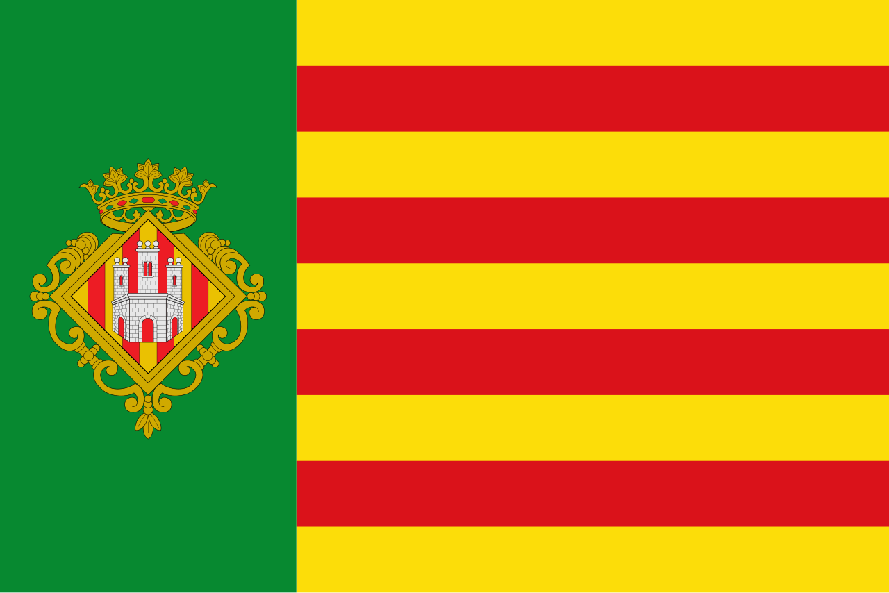
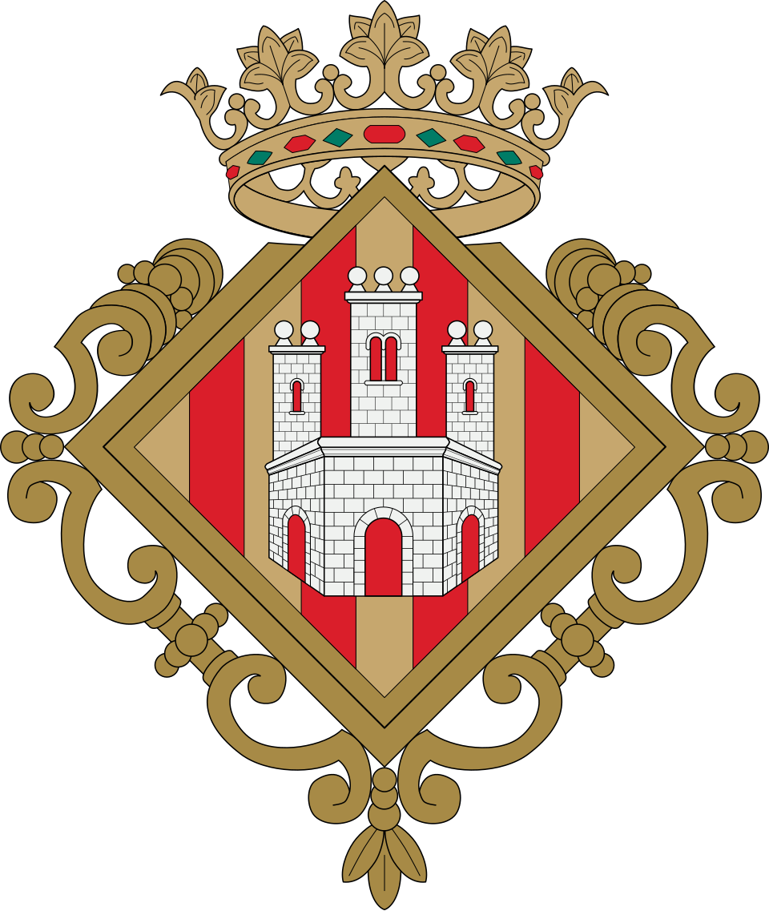

Castellón de la Plana (cooficialmente en valenciano: Castelló de la Plana)4 es una ciudad y municipio español, capital de la provincia de Castellón y de la comarca de la Plana Alta, ubicada en el noreste de la Comunidad Valenciana Geográficamente se sitúa al este de la península ibérica sobre una extensión de terreno llano, rodeada por distintas sierras por el interior y el mar Mediterráneo al este, ante el cual se extienden los 8,6 kilómetros de la Costa del Azahar de los que disfruta el municipio.
El núcleo urbano principal se encuentra a 27 m de media sobre el nivel del mar y a unos 4 km del mar. A medio camino entre la ciudad y el mar, en plena Marjalería, se cruzan el paralelo 40º norte y el meridiano 0º o de Greenwich, dos de las circunferencias imaginarias que rodean la Tierra.5 A 30 millas náuticas se encuentra el archipiélago de origen volcánico de las islas Columbretes, declarado reserva marina en 1990 y reserva natural en 1994. 6
|  |  |
|---|
| Entidad de población | Población (2023) | Coordenadas | Distancia |
|---|---|---|---|
| Islas Columbretes | 0 | 39°55′00″N 0°40′0″O | 30mn |
| Castellón | 148 385 | 39°57′03″N 0°1′0″O | 0 km |
| Grao | 15 324 | 39°57′00″N 0°01′0″O | 4 km |
| Diseminado | 12 529 | — | — |